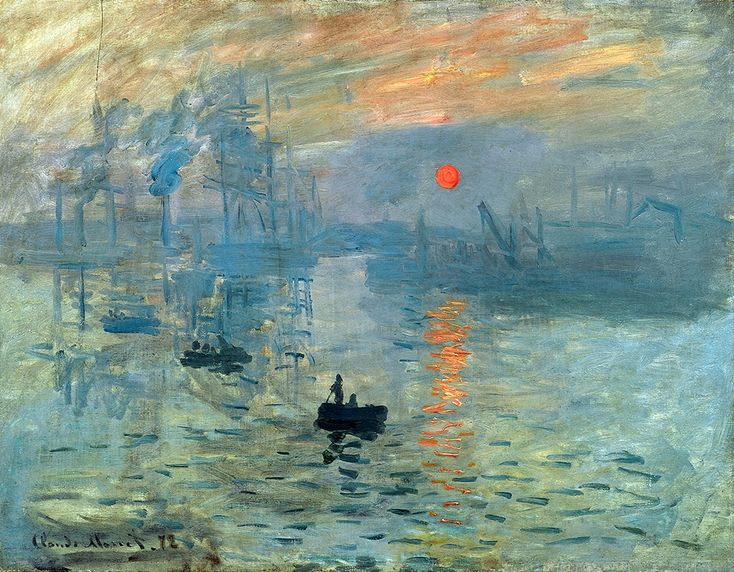
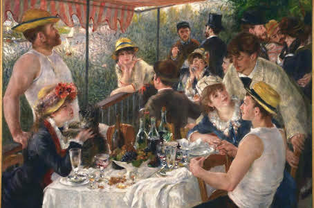
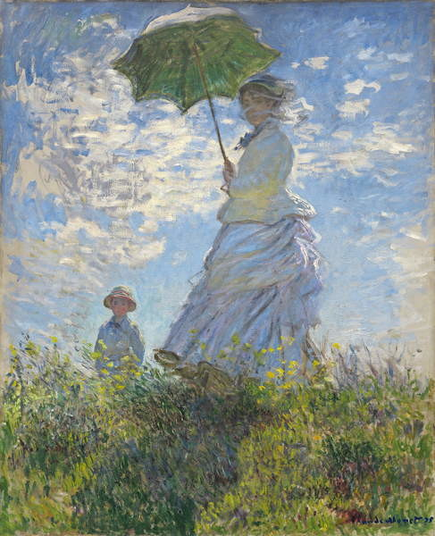
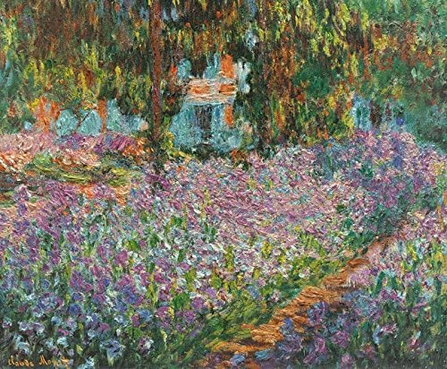
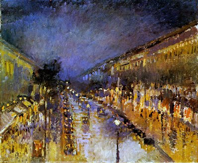
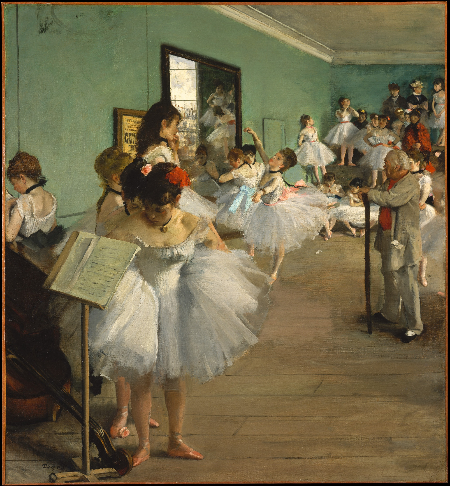
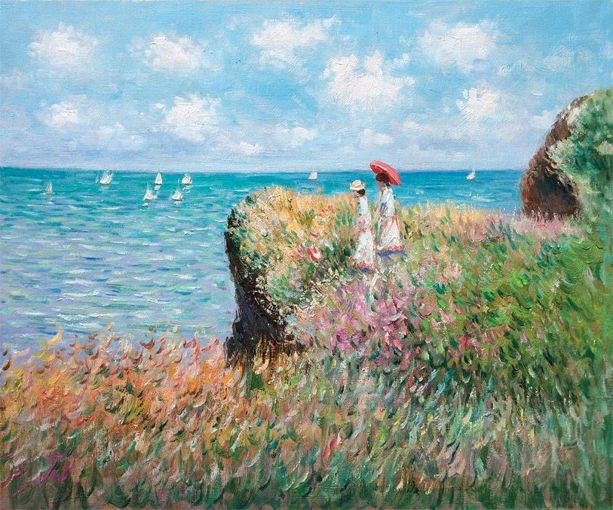
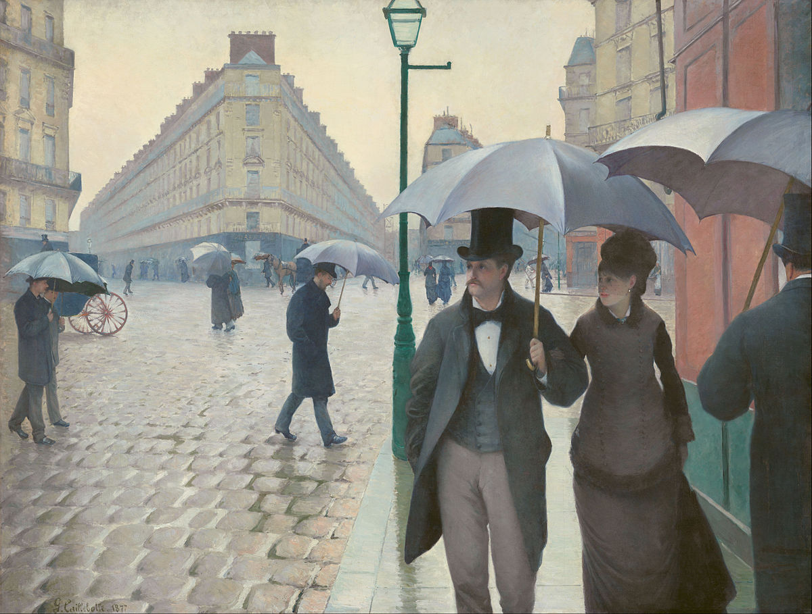
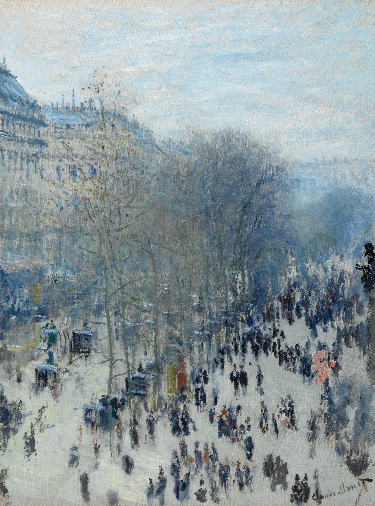
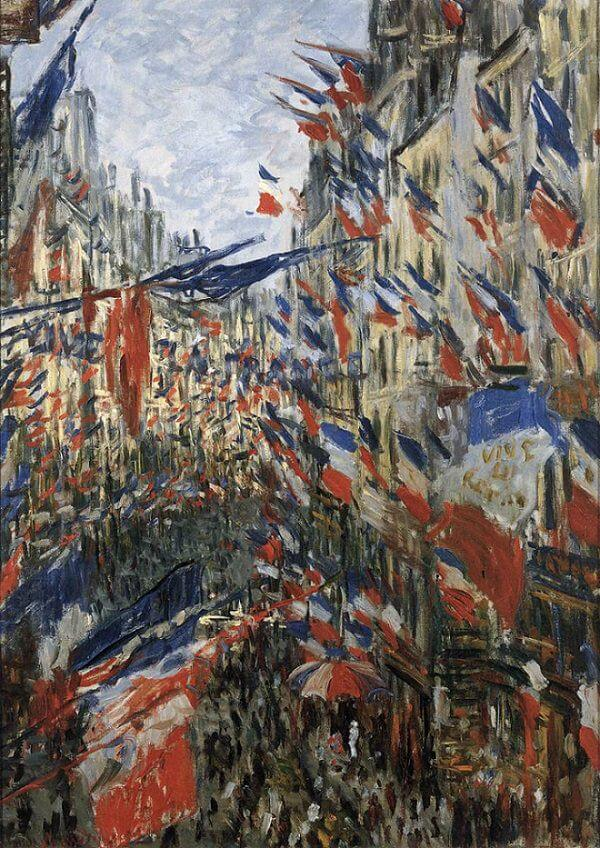

Claude Monet - "Impresie, răsărit"

Claude Monet - "Impresie, răsărit"

Claude Monet - "Femeie cu parazol - Madame Monet și fiul ei"

Claude Monet - "Maci"

Claude Monet - "Grădina Artistului de la Giverny"

Camille Pissarro - "Bulevardul Montmartre noaptea"

Edgar Degas - "Clasa de dans"

Claude Monet - "Bain à la Grenouillère"

Claude Monet - "Cliff Walk la Pourville"

Gustave Caillebotte - "Strada Paris; Zi ploioasa"

Claude Monet - "Boulevard des Capucines"
